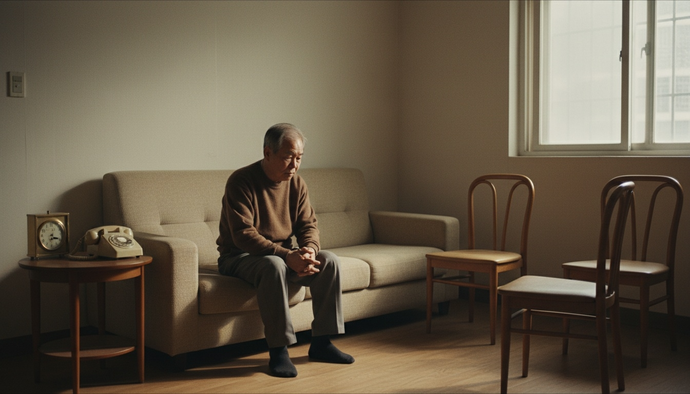

The Problem
초고령 사회,
두 개의 공백.
2025년, 대한민국은 초고령 사회에 진입했습니다. 65세 이상 인구 비율 22.1%, 독거노인 219만 가구. 이 숫자 뒤에는 아무도 연결하지 못한 두 개의 공백이 있습니다.
공백 1 — 병원 안
"무슨 약 드세요?"라는 질문에 대답하지 못하는 어르신. 간호사의 반복 질문, 부정확한 정보, 놓치는 실손보험 혜택. 기억이 사라진 자리에서 진료의 품질이 떨어집니다.

공백 2 — 병원 밖
진료가 끝나고 병원을 나서는 순간, 돌봄의 연결고리가 끊어집니다. 복약 확인, 건강 이상 감지, 정서적 안부를 물을 사람이 없습니다. 고독사 위험 대상은 이미 40~60대까지 확대되고 있습니다.
